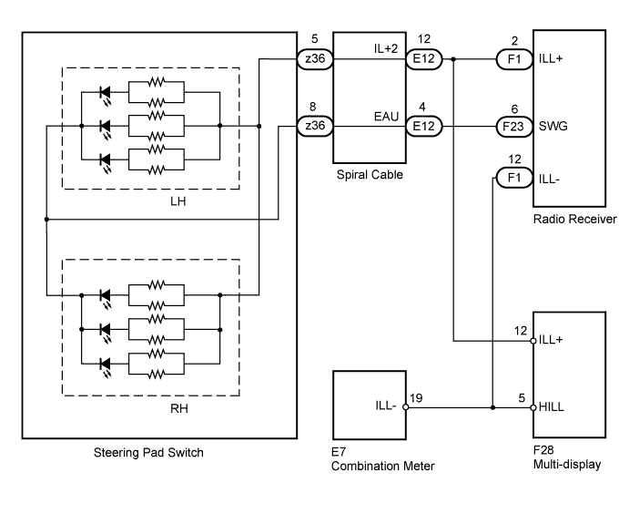
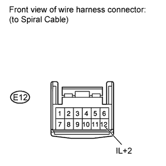
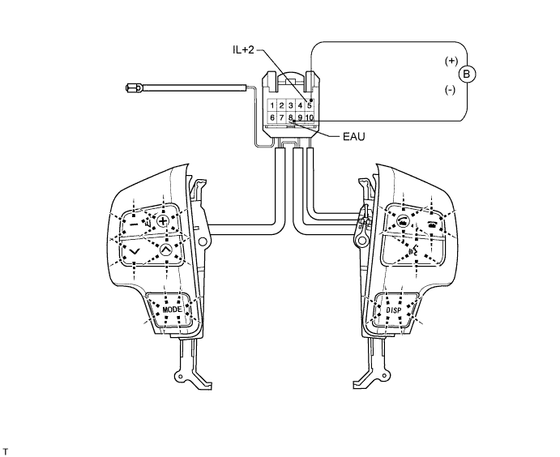
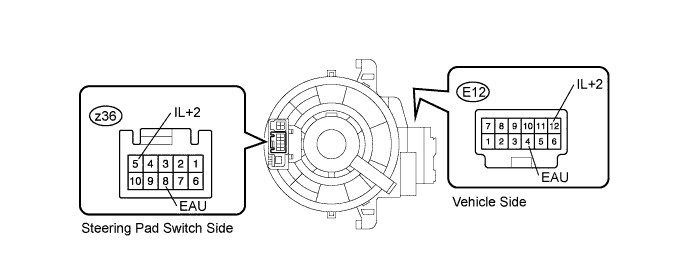
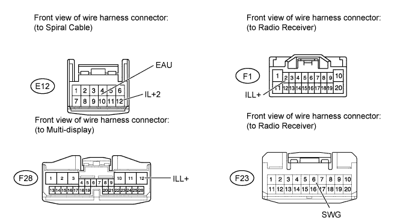
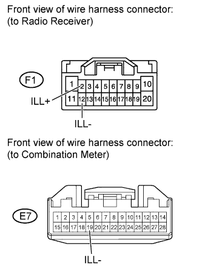
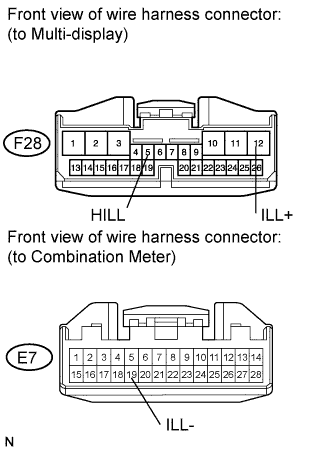

NAVIGATION SYSTEM > Illumination Circuit |

| 1.CHECK ILLUMINATION |
Check if the illumination for the multi-display, steering pad switch, glove box light, cigarette lighter, or other parts (seat heater switch, front seat memory switch, etc.) comes on when the light control switch is turned to the HEAD or TAIL position.
| Result | Proceed to |
| Illumination comes on for all components except steering pad switch. | A |
| Illumination comes on for all components except radio receiver. | B |
| Illumination comes on for all components except multi-display. | C |
| No illumination comes on all components. | D |
|
| ||||
|
| ||||
|
| ||||
| A | |
| 2.CHECK HARNESS AND CONNECTOR (BATTERY - SPIRAL CABLE) |
 |
Disconnect the E12 cable connector.
Measure the voltage according to the value(s) in the table below.
| Tester Connection | Condition | Specified Condition |
| E12-12 (IL+2) - Body ground | Always | 11 to 14 V |
|
| ||||
| OK | |
| 3.CHECK STEERING PAD SWITCH ASSEMBLY |

Disconnect the z36 switch connector.
Connect the positive (+) lead to terminal 5 (IL+2) and the negative (-) lead to terminal 8 (EAU) of the steering pad switch connector.
Check if the illumination for the steering pad switch comes on.
|
| ||||
| OK | |
| 4.INSPECT SPIRAL CABLE |

Disconnect the cable connectors.
Measure the resistance according to the value(s) in the table below.
| Tester Connection | Spiral Cable Position | Specified Condition |
| E12-12 (IL+2) - z36-5 (IL+2) | 2.5 rotations to left | Below 3 Ω |
| Center | ||
| 2.5 rotations to right | ||
| E12-4 (EAU) - z36-8 (EAU) | 2.5 rotations to left | Below 3 Ω |
| Center | ||
| 2.5 rotations to right |
|
| ||||
| OK | |
| 5.CHECK HARNESS AND CONNECTOR (SPIRAL CABLE - MULTI-DISPLAY AND RADIO RECEIVER) |

Disconnect the E12 spiral cable connector.
Disconnect the F1 and F23 receiver connectors.
Disconnect the F28 display connector.
Measure the resistance according to the value(s) in the table below.
| Tester Connection | Condition | Specified Condition |
| E12-12 (IL+2) - F1-2 (ILL+) | Always | Below 1 Ω |
| E12-12 (IL+2) - F28-12 (ILL+) | Always | Below 1 Ω |
| E12-4 (EAU) - F23-6 (SWG) | Always | Below 1 Ω |
| E12-12 (IL+2) - Body ground | Always | 10 kΩ or higher |
| E12-4 (EAU) - Body ground | Always | 10 kΩ or higher |
|
| ||||
| OK | ||
| ||
| 6.CHECK HARNESS AND CONNECTOR (RADIO RECEIVER - COMBINATION METER) |
 |
Disconnect the F1 receiver connector.
Disconnect the E7 meter connector.
Measure the resistance according to the value(s) in the table below.
| Tester Connection | Condition | Specified Condition |
| F1-12 (ILL-) - E7-19 (ILL-) | Always | Below 1 Ω |
| F1-12 (ILL-) - Body ground | Always | 10 kΩ or higher |
Measure the voltage according to the value(s) in the table below.
| Tester Connection | Switch Condition | Specified Condition |
| F1-2 (ILL+) - Body ground | Light control Switch TAIL or HEAD | 11 to 14 V |
|
| ||||
| OK | ||
| ||
| 7.CHECK HARNESS AND CONNECTOR (MULTI-DISPLAY - BATTERY AND COMBINATION METER) |
 |
Disconnect the F28 display connector.
Disconnect the E7 meter connector.
Measure the resistance according to the value(s) in the table below.
| Tester Connection | Condition | Specified Condition |
| F28-5 (HILL) - E7-19 (ILL-) | Always | Below 1 Ω |
| F28-5 (HILL) - Body ground | Always | 10 kΩ or higher |
Measure the voltage according to the value(s) in the table below.
| Tester Connection | Switch Condition | Specified Condition |
| F28-12 (ILL+) - Body ground | Light control switch TAIL or HEAD | 11 to 14 V |
|
| ||||
| OK | ||
| ||